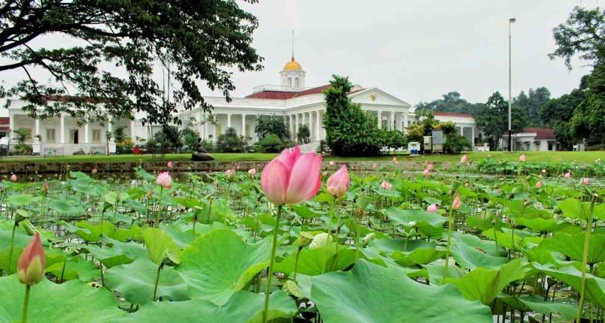
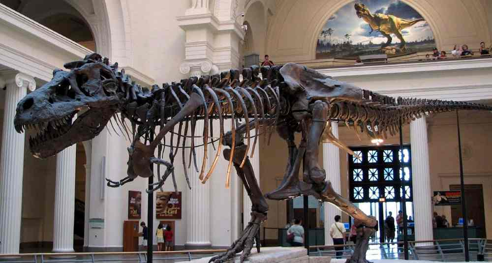
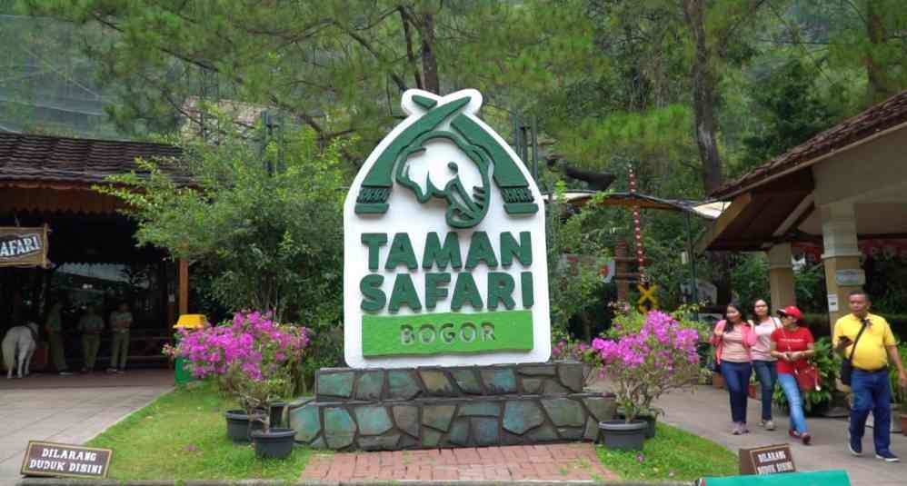

WISATA
Kebun Raya Bogor
Beridri sejak tahun 1817 di lahan seluas 87 hektar, Kebun Raya Bogor merupakan rumah bagi lebih dari 15.000 spesies tanaman dan merupakan tempat berdirinya istana presiden tertua di Indonesia, Istana Bogor yang dibangun pada 1744.
Museum Zoologi
Museum yang telah mulai mengumpulkan koleksi satwa sejak 1894 ini menyimpan jutaan fosil satwa mulai dari mamalia, unggas, hingga berbagai jenis serangga dan ikan.
Taman Safari
Taman Safari Indonesia telah lama jadi pilihan tempat wisata yang populer di Bogor. Selain bisa melihat berbagai species fauna, kalian bersama keluarga bisa melihat berbagai pertunjukkan dan juga berinteraksi langsung dengan berbagai fauna yang jinak.